library(dplyr)
library(ggplot2)
library(rnaturalearth)
library(remotes)
library(rnaturalearthhires)
library(tidyverse)
library(ggplot2)
library(ggthemes)Análise Estatística
Carregando os pacotes
Carregando os dados
library(readxl)
dados <- read_excel("Dados.xlsx")Visualização Ngerm
library(ggplot2)
dados_a <- dados |>
mutate(trat = as.numeric(trat))
g1 <- dados_a |>
ggplot(aes(trat, Ngerm)) +
geom_jitter(width = 0.1, alpha = 0.2) +
stat_summary(fun.data = "mean_cl_boot", size = 0.5, color = "blue") +
scale_x_continuous(breaks = c(0, 5, 10, 25, 50)) +
ylim(35, 55) +
labs(x = "Concentração (%)", y = "Sementes germinadas") +
theme_classic()
g1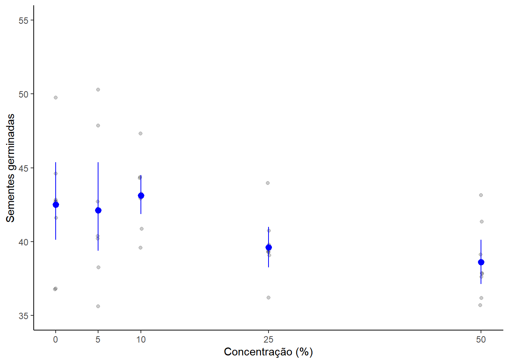
ANOVA Ngerm
m1 <- lm(Ngerm~trat,
data = dados)
summary(m1)
Call:
lm(formula = Ngerm ~ trat, data = dados)
Residuals:
Min 1Q Median 3Q Max
-6.3505 -1.6624 -0.3593 1.3420 7.6495
Coefficients:
Estimate Std. Error t value Pr(>|t|)
(Intercept) 42.79294 0.73539 58.191 < 2e-16 ***
trat -0.08850 0.02884 -3.068 0.00396 **
---
Signif. codes: 0 '***' 0.001 '**' 0.01 '*' 0.05 '.' 0.1 ' ' 1
Residual standard error: 3.294 on 38 degrees of freedom
Multiple R-squared: 0.1985, Adjusted R-squared: 0.1774
F-statistic: 9.413 on 1 and 38 DF, p-value: 0.00396anova(m1)Analysis of Variance Table
Response: Ngerm
Df Sum Sq Mean Sq F value Pr(>F)
trat 1 102.13 102.125 9.4131 0.00396 **
Residuals 38 412.27 10.849
---
Signif. codes: 0 '***' 0.001 '**' 0.01 '*' 0.05 '.' 0.1 ' ' 1m1$residuals 1 2 3 4 5 6 7
0.2070552 -5.7929448 2.2070552 7.2070552 0.2070552 -0.7929448 0.2070552
8 9 10 11 12 13 14
-5.7929448 -2.3504601 5.6495399 0.6495399 7.6495399 -0.3504601 -6.3504601
15 16 17 18 19 20 21
-4.3504601 -2.3504601 1.0920245 2.0920245 -1.9079755 1.0920245 1.0920245
22 23 24 25 26 27 28
5.0920245 -0.9079755 2.0920245 -1.5805215 -0.5805215 -4.5805215 -1.5805215
29 30 31 32 33 34 35
3.4194785 -1.5805215 -1.5805215 0.4194785 0.6319018 -2.3680982 2.6319018
36 37 38 39 40
-0.3680982 -0.3680982 -2.3680982 4.6319018 -0.3680982 hist(m1$residuals)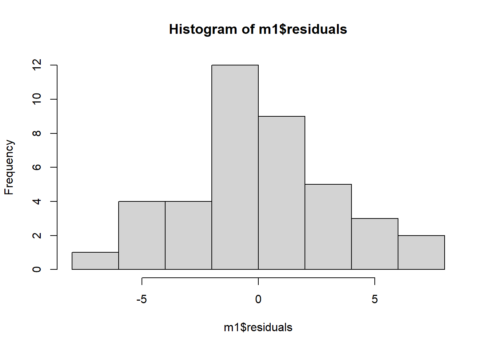
library(performance)
check_normality(m1)OK: residuals appear as normally distributed (p = 0.287).check_heteroscedasticity(m1)OK: Error variance appears to be homoscedastic (p = 0.064).library(DHARMa)
plot(simulateResiduals(m1))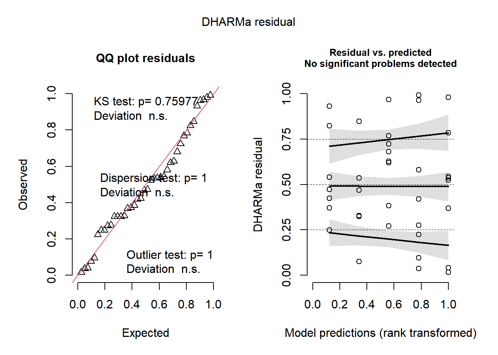
shapiro.test(m1$residuals)
Shapiro-Wilk normality test
data: m1$residuals
W = 0.96694, p-value = 0.2867bartlett.test(Ngerm~trat,
data = dados)
Bartlett test of homogeneity of variances
data: Ngerm by trat
Bartlett's K-squared = 7.9863, df = 4, p-value = 0.09208Regressão Ngerm
dados2 <- dados %>% group_by(trat) %>% summarise(Ngerm = mean(Ngerm)/50*100)
quadratico <- lm(Ngerm ~ poly(trat,2, raw = T), data = dados2)
b <- summary(quadratico)
R2q <- round(b$r.squared,2)
B0q <- round(quadratico$coefficients[1],4)
B1q <- round(quadratico$coefficients[2],4)
B2q <- round(quadratico$coefficients[3],4)
equacao2 <- paste(B2q,"x²", "+", "(", B1q, ")","x", "+", B0q)
grafico2 <- ggplot(data = dados2,aes(x = trat, y = Ngerm))+
geom_point() +
geom_smooth(method = "lm", formula = y ~ poly(x,2,raw = T)) +
theme_classic() +
annotate(geom = "text", x = 35, y = 100, label = paste("y =", equacao2)) +
annotate(geom = "text", x = 25.5, y = 98, label = paste("R² =", R2q)) +
scale_x_continuous(breaks = seq(0,50,5))+
labs(x = "Concentração (%)", y = "Taxa de Germinação (%)")
grafico2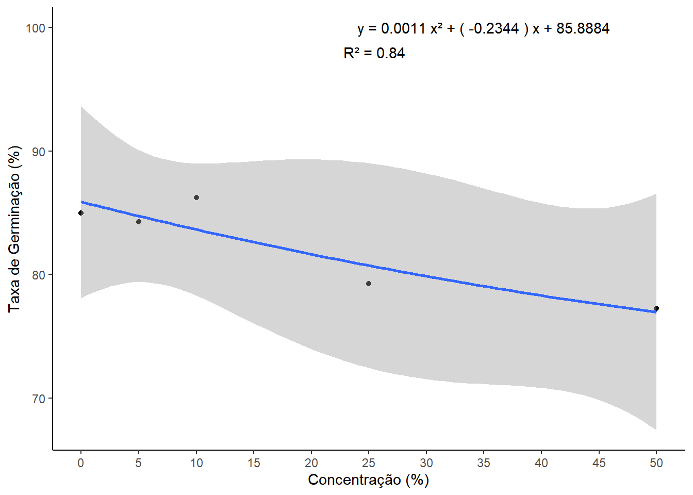
r <- sqrt(R2q)Visualização Nmort
library(ggplot2)
dados_b <- dados |>
mutate(trat = as.numeric(trat))
g2 <- dados_b |>
ggplot(aes(trat, Nmort)) +
geom_jitter(width = 0.1, alpha = 0.2)+
stat_summary(fun.data = "mean_cl_boot", size = 0.5, color = "blue") +
scale_x_continuous(breaks = c(0, 5, 10, 25, 50))+
ylim(0,15) +
labs(x = "Concentração", y = "Sementes mortas")+
theme_classic()
g2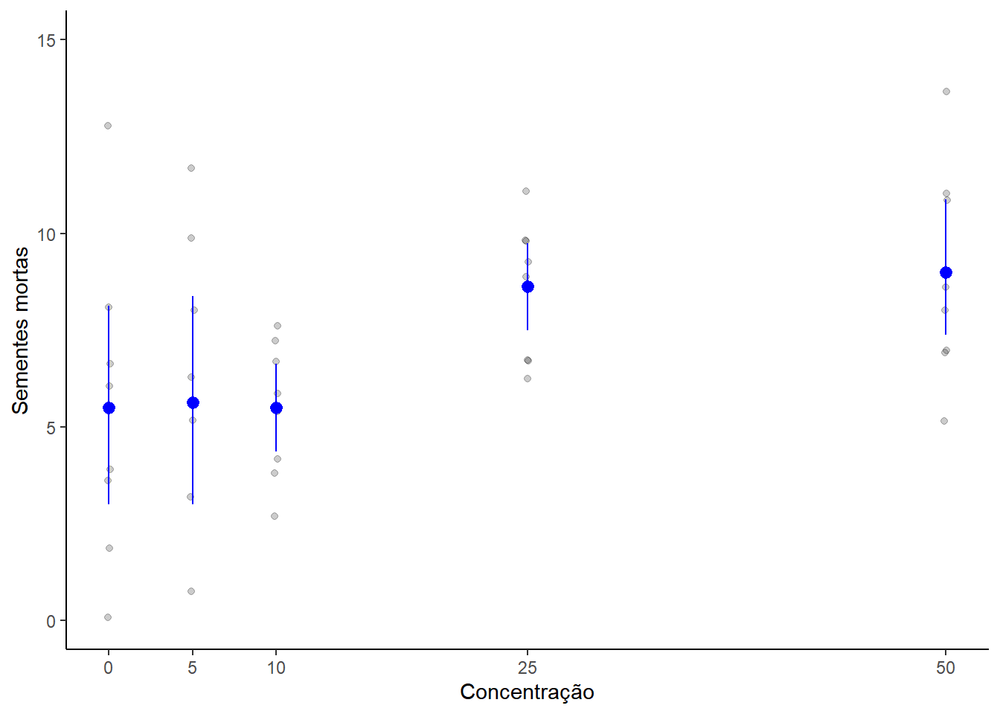
ANOVA Nmort
m2 <- lm(Nmort~trat,
data = dados)
summary(m2)
Call:
lm(formula = Nmort ~ trat, data = dados)
Residuals:
Min 1Q Median 3Q Max
-5.7952 -2.2009 -0.3094 1.6576 7.6104
Coefficients:
Estimate Std. Error t value Pr(>|t|)
(Intercept) 5.38957 0.68457 7.873 1.67e-09 ***
trat 0.08113 0.02685 3.022 0.00448 **
---
Signif. codes: 0 '***' 0.001 '**' 0.01 '*' 0.05 '.' 0.1 ' ' 1
Residual standard error: 3.066 on 38 degrees of freedom
Multiple R-squared: 0.1937, Adjusted R-squared: 0.1725
F-statistic: 9.13 on 1 and 38 DF, p-value: 0.004481anova(m2)Analysis of Variance Table
Response: Nmort
Df Sum Sq Mean Sq F value Pr(>F)
trat 1 85.84 85.841 9.1305 0.004481 **
Residuals 38 357.26 9.402
---
Signif. codes: 0 '***' 0.001 '**' 0.01 '*' 0.05 '.' 0.1 ' ' 1m2$residuals 1 2 3 4 5 6 7
1.6104294 7.6104294 -1.3895706 -5.3895706 -1.3895706 2.6104294 0.6104294
8 9 10 11 12 13 14
-3.3895706 4.2047546 -4.7952454 0.2047546 -5.7952454 2.2047546 6.2047546
15 16 17 18 19 20 21
-0.7952454 -2.7952454 0.7990798 -2.2009202 0.7990798 -2.2009202 -1.2009202
22 23 24 25 26 27 28
-3.2009202 1.7990798 -0.2009202 -0.4179448 2.5820552 2.5820552 1.5820552
29 30 31 32 33 34 35
-1.4179448 3.5820552 1.5820552 -0.4179448 1.5536810 4.5536810 -0.4463190
36 37 38 39 40
-2.4463190 1.5536810 -1.4463190 -2.4463190 -4.4463190 hist(m2$residuals)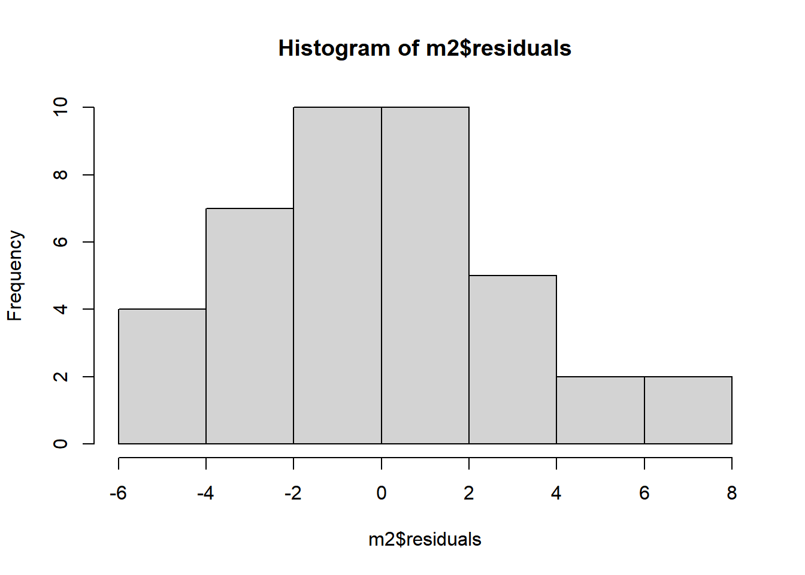
library(performance)
check_normality(m2)OK: residuals appear as normally distributed (p = 0.879).check_heteroscedasticity(m2)OK: Error variance appears to be homoscedastic (p = 0.232).library(DHARMa)
plot(simulateResiduals(m2))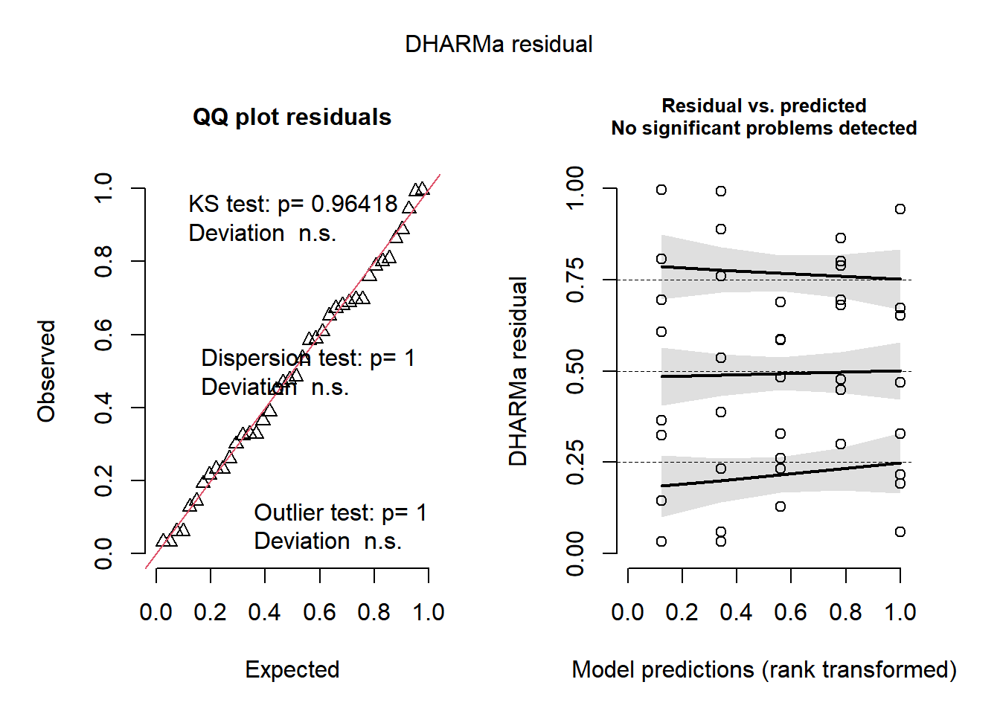
shapiro.test(m2$residuals)
Shapiro-Wilk normality test
data: m2$residuals
W = 0.98596, p-value = 0.8924bartlett.test(Nmort~trat,
data = dados)
Bartlett test of homogeneity of variances
data: Nmort by trat
Bartlett's K-squared = 8.6296, df = 4, p-value = 0.07106Regressão Nmort
dados3 <- dados %>% group_by(trat) %>% summarise(Nmort = mean(Nmort)/50*100)
quadratico3 <- lm(Nmort ~ poly(trat,2, raw = T), data = dados3)
b <- summary(quadratico3)
R2q <- round(b$r.squared,2)
B0q <- round(quadratico3$coefficients[1],2)
B1q <- round(quadratico3$coefficients[2],2)
B2q <- round(quadratico3$coefficients[3],4)
equacao3 <- paste("(", B2q, ")", "x²", "+", B1q,"x", "+", B0q)
grafico3 <- ggplot(data = dados3,aes(x = trat, y = Nmort))+
geom_point() +
geom_smooth(method = "lm", formula = y ~ poly(x,2,raw = T)) +
theme_classic() +
annotate(geom = "text", x = 10, y = 25, label = paste("y =", equacao3)) +
annotate(geom = "text", x = 10, y = 23, label = paste("R² =", R2q))+
scale_x_continuous(breaks = seq(0,50,5))+
labs(x = "Concentração (%)", y = "Taxa de Mortalidade (%)")
grafico3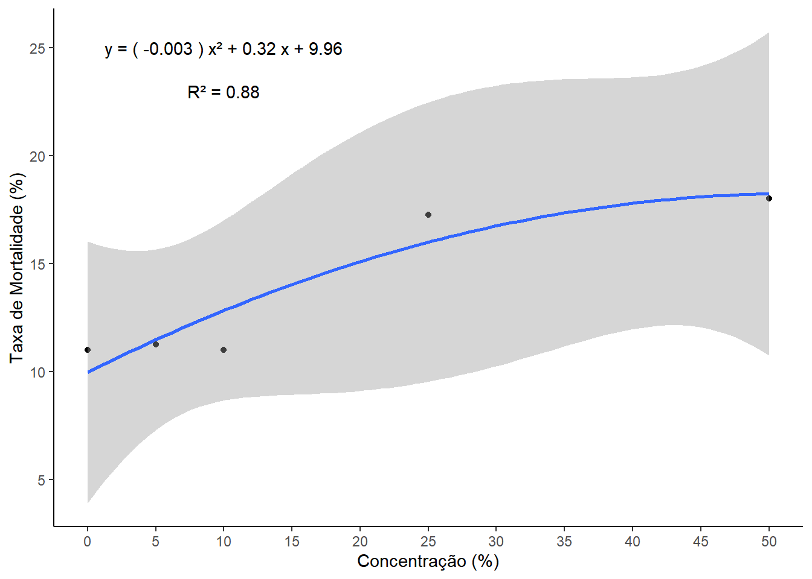
r <- sqrt(R2q)Visualização IVG
library(ggplot2)
dados_c <- dados |>
mutate(trat = as.numeric(trat))
g3 <- dados_c |>
ggplot(aes(trat, IVG)) +
geom_jitter(width = 0.1, alpha = 0.2)+
stat_summary(fun.data = "mean_cl_boot", size = 0.5, color = "blue") +
scale_x_continuous(breaks = c(0, 5, 10, 25, 50))+
ylim(10,18) +
labs(x = "Concentração (%)", y = "IVG (%)")+
theme_classic()
g3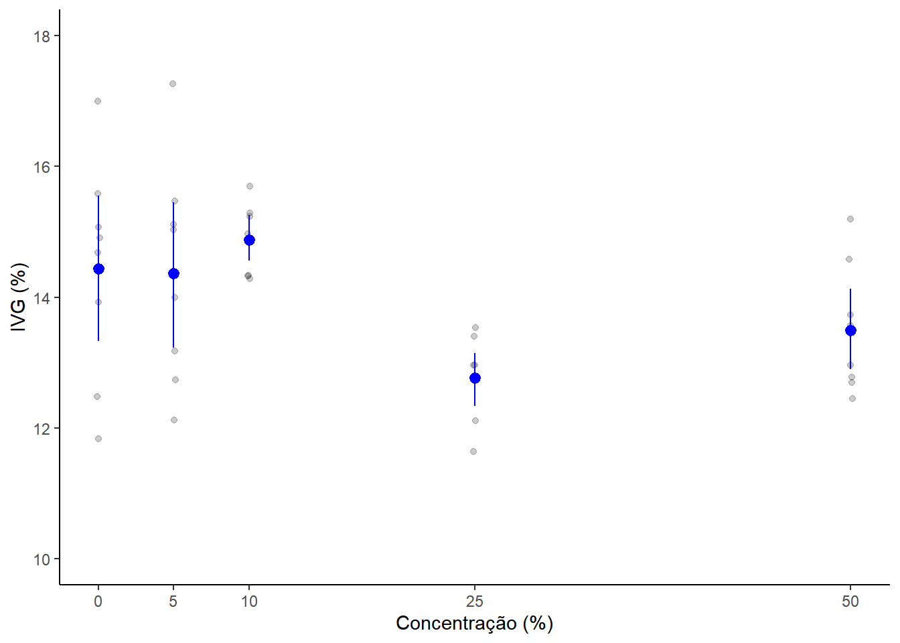
ANOVA IVG
m3 <- lm(IVG~trat,
data = dados)
summary(m3)
Call:
lm(formula = IVG ~ trat, data = dados)
Residuals:
Min 1Q Median 3Q Max
-2.64260 -0.83613 0.09784 0.76558 2.92415
Coefficients:
Estimate Std. Error t value Pr(>|t|)
(Intercept) 14.47872 0.28962 49.991 <2e-16 ***
trat -0.02724 0.01136 -2.398 0.0215 *
---
Signif. codes: 0 '***' 0.001 '**' 0.01 '*' 0.05 '.' 0.1 ' ' 1
Residual standard error: 1.297 on 38 degrees of freedom
Multiple R-squared: 0.1314, Adjusted R-squared: 0.1086
F-statistic: 5.749 on 1 and 38 DF, p-value: 0.02151anova(m3)Analysis of Variance Table
Response: IVG
Df Sum Sq Mean Sq F value Pr(>F)
trat 1 9.675 9.6752 5.7495 0.02151 *
Residuals 38 63.947 1.6828
---
Signif. codes: 0 '***' 0.001 '**' 0.01 '*' 0.05 '.' 0.1 ' ' 1m3$residuals 1 2 3 4 5 6
0.43358652 -2.64260395 0.59628494 2.52128494 1.10461827 0.20580874
7 8 9 10 11 12
-0.55252459 -1.99538173 -0.34251996 1.13089274 0.77414670 2.92414670
13 14 15 16 17 18
0.69081337 -2.21632949 -1.60918663 -1.15918663 1.07700847 1.02700847
19 20 21 22 23 24
0.12700847 0.07700847 0.67819895 0.76272276 1.49367514 0.11867514
25 26 27 28 29 30
-0.26440622 -0.39773956 -1.68107289 -2.15488241 -1.04773956 -0.83543797
31 32 33 34 35 36
-0.83821575 -1.04773956 -0.66676405 -0.33343071 1.46656929 0.44990262
37 38 39 40
-0.15724024 -0.41676405 2.08323595 0.61656929 hist(m3$residuals)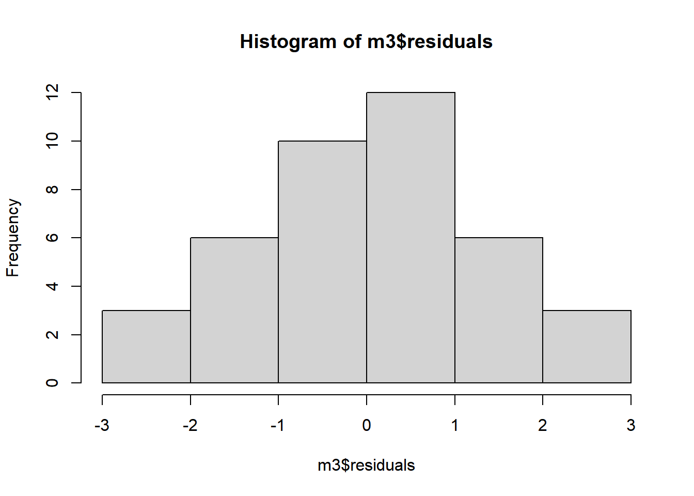
library(performance)
check_normality(m3)OK: residuals appear as normally distributed (p = 0.942).check_heteroscedasticity(m3)OK: Error variance appears to be homoscedastic (p = 0.211).library(DHARMa)
plot(simulateResiduals(m3))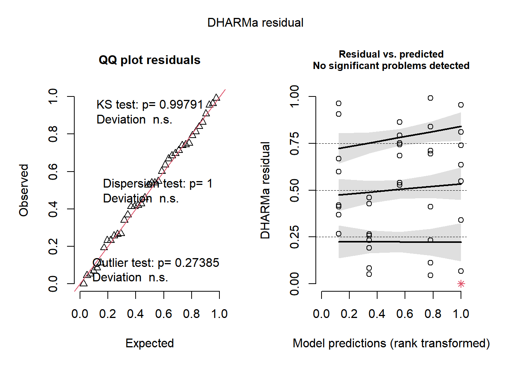
shapiro.test(m3$residuals)
Shapiro-Wilk normality test
data: m3$residuals
W = 0.98822, p-value = 0.9462bartlett.test(IVG~trat,
data = dados)
Bartlett test of homogeneity of variances
data: IVG by trat
Bartlett's K-squared = 13.598, df = 4, p-value = 0.008695Regressão IVG
dados4 <- dados %>% group_by(trat) %>% summarise(IVG = mean(IVG))
quadratico4 <- lm(IVG ~ poly(trat,2, raw = T), data = dados4)
b <- summary(quadratico4)
R2q <- round(b$r.squared,2)
B0q <- round(quadratico4$coefficients[1],2)
B1q <- round(quadratico4$coefficients[2],2)
B2q <- round(quadratico4$coefficients[3],4)
equacao4 <- paste(B2q,"x²", "+", "(", B1q, ")","x", "+", B0q)
grafico4 <- ggplot(data = dados4,aes(x = trat, y = IVG))+
geom_point()+
geom_smooth(method = "lm", formula = y ~ poly(x,2,raw = T)) +
theme_classic() +
annotate(geom = "text", x = 35, y = 19, label = paste("y =", equacao4)) +
annotate(geom = "text", x = 35, y = 18, label = paste("R² =", R2q))+
scale_x_continuous(breaks = seq(0,50,5))+
labs(x = "Concentração (%)", y = "IVG (%)")
grafico4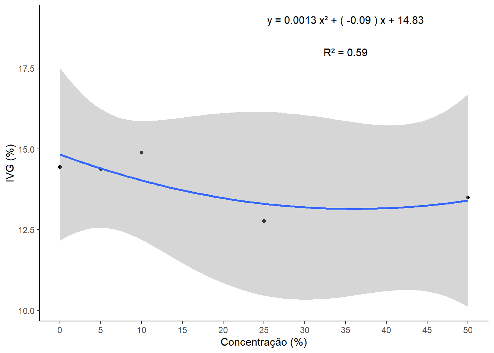
r <- sqrt(R2q)Visualização MS
library(ggplot2)
dados_d <- dados |>
mutate(trat = as.numeric(trat))
# Criar o gráfico
g4 <- dados_d |>
ggplot(aes(trat,MS )) +
geom_jitter(width = 0.1, alpha = 0.2)+
stat_summary(fun.data = "mean_cl_boot", size = 0.5, color = "blue")+
scale_x_continuous(breaks = c(0, 5, 10, 25, 50))+
ylim(0,0.015) +
labs(x = "Concentração (%)", y = "Massa Seca")+
theme_classic()
g4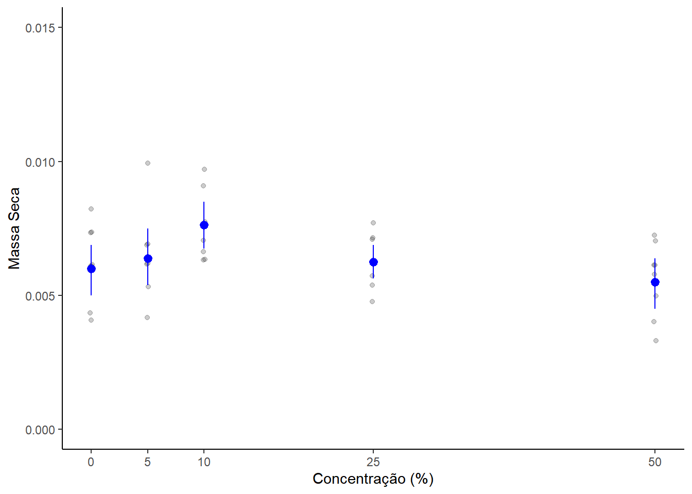
ANOVA MS
m4 <- lm(MS~trat,
data = dados)
summary(m4)
Call:
lm(formula = MS ~ trat, data = dados)
Residuals:
Min 1Q Median 3Q Max
-0.0027193 -0.0007048 0.0000343 0.0007880 0.0034923
Coefficients:
Estimate Std. Error t value Pr(>|t|)
(Intercept) 6.705e-03 3.359e-04 19.958 <2e-16 ***
trat -1.971e-05 1.318e-05 -1.496 0.143
---
Signif. codes: 0 '***' 0.001 '**' 0.01 '*' 0.05 '.' 0.1 ' ' 1
Residual standard error: 0.001505 on 38 degrees of freedom
Multiple R-squared: 0.0556, Adjusted R-squared: 0.03075
F-statistic: 2.237 on 1 and 38 DF, p-value: 0.143anova(m4)Analysis of Variance Table
Response: MS
Df Sum Sq Mean Sq F value Pr(>F)
trat 1 5.0650e-06 5.0651e-06 2.2372 0.143
Residuals 38 8.6035e-05 2.2641e-06 m4$residuals 1 2 3 4 5
0.0002952454 -0.0027047546 -0.0007047546 0.0002952454 -0.0007047546
6 7 8 9 10
0.0012952454 -0.0027047546 -0.0007047546 -0.0006062117 0.0003937883
11 12 13 14 15
0.0003937883 -0.0026062117 -0.0006062117 0.0033937883 -0.0006062117
16 17 18 19 20
-0.0016062117 0.0004923313 0.0004923313 -0.0005076687 0.0034923313
21 22 23 24 25
0.0014923313 -0.0005076687 0.0024923313 0.0014923313 0.0017879601
26 27 28 29 30
-0.0002120399 -0.0012120399 0.0007879601 0.0007879601 -0.0012120399
31 32 33 34 35
-0.0002120399 -0.0002120399 0.0012806748 0.0002806748 0.0002806748
36 37 38 39 40
0.0012806748 -0.0007193252 0.0002806748 -0.0027193252 -0.0017193252 hist(m4$residuals)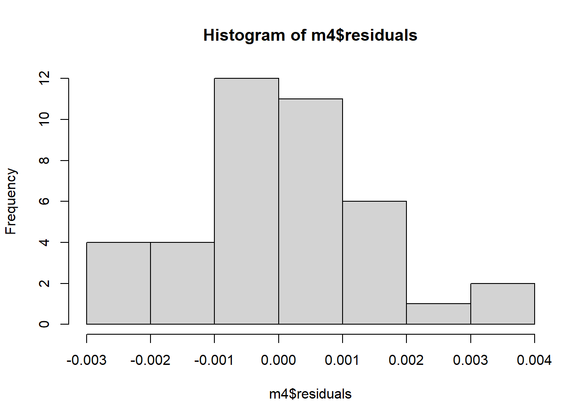
library(performance)
check_normality(m4)OK: residuals appear as normally distributed (p = 0.284).check_heteroscedasticity(m4)OK: Error variance appears to be homoscedastic (p = 0.401).library(DHARMa)
plot(simulateResiduals(m4))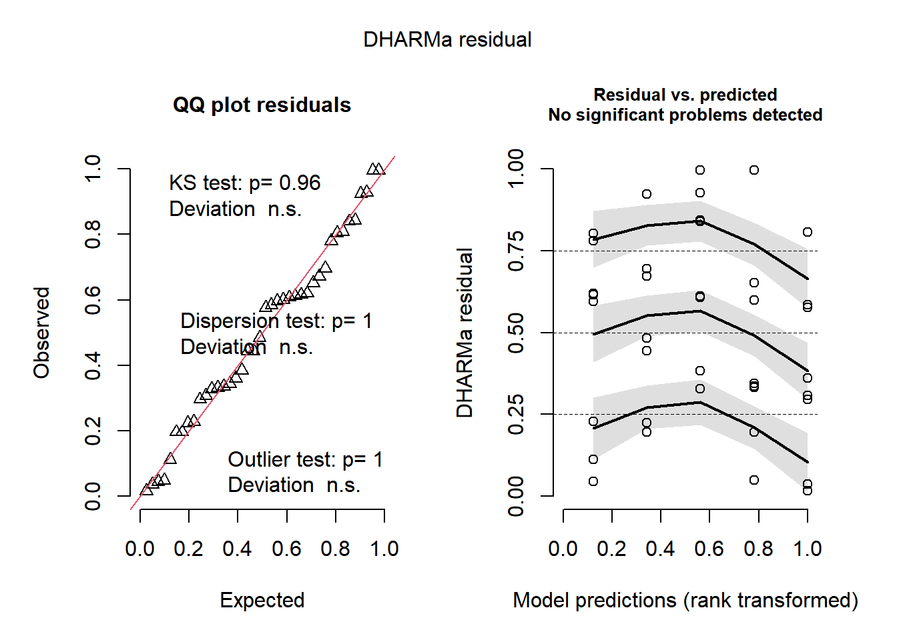
shapiro.test(m4$residuals)
Shapiro-Wilk normality test
data: m4$residuals
W = 0.965, p-value = 0.2473bartlett.test(MS~trat,
data = dados)
Bartlett test of homogeneity of variances
data: MS by trat
Bartlett's K-squared = 1.8232, df = 4, p-value = 0.7682Regressão MS
dados5 <- dados %>% group_by(trat) %>% summarise(MS = mean(MS))
quadratico5 <- lm(MS ~ poly(trat,2, raw = T), data = dados5)
b <- summary(quadratico5)
R2q <- round(b$r.squared,2)
B0q <- round(quadratico5$coefficients[1],4)
B1q <- round(quadratico5$coefficients[2],4)
B2q <- round(quadratico5$coefficients[3],6)
equacao5 <- paste("(", B2q, ")", "x²", "+", B1q,"x", "+", B0q)
grafico5 <- ggplot(data = dados5,aes(x = trat, y = MS))+
geom_point()+
geom_smooth(method = "lm", formula = y ~ poly(x,2,raw = T)) +
theme_classic() +
annotate(geom = "text", x = 35, y = 0.01, label = paste("y =", equacao5)) +
annotate(geom = "text", x = 35, y = 0.0095, label = paste("R² =", R2q))+
scale_x_continuous(breaks = seq(0,50,5))+
labs(x = "Concentração (%)", y = "Massa Seca (g)")
grafico5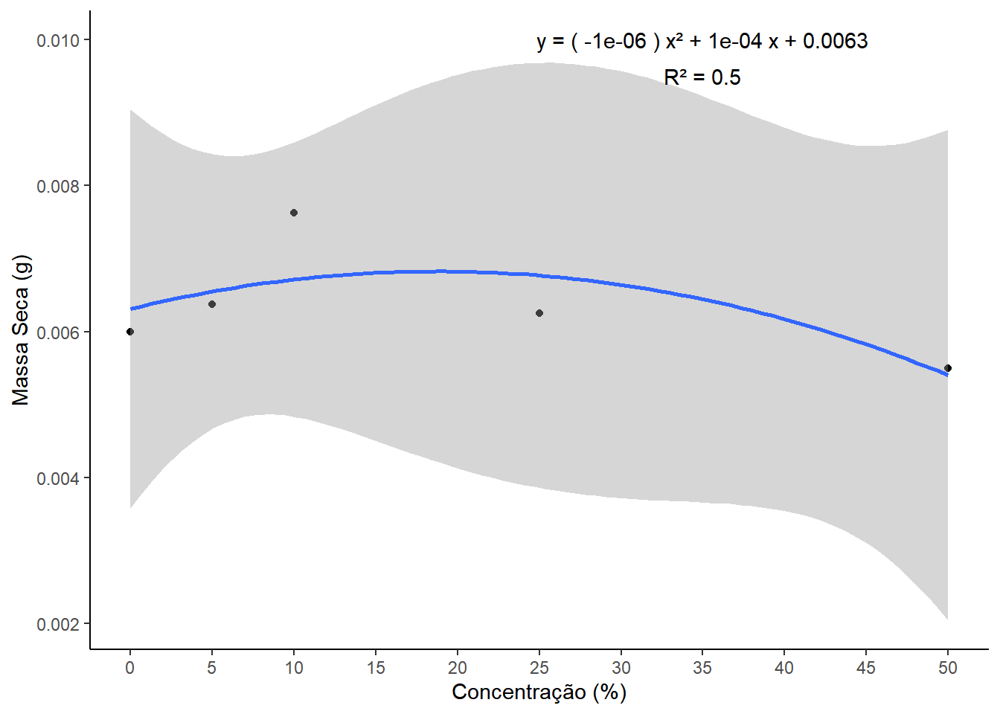
r <- sqrt(R2q)